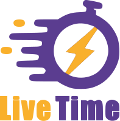
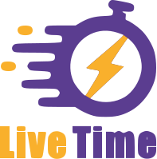

SPEEDRUNS
& Charity
A project by HETIC students
In 1993, ID Software releases Doom which becomes an international success. One year after its release, a website by the name of LMP Hall of Fame lets players upload their gameplay clips in the hopes of obtaining “DOOM Honorifics Titles”, the goal being finishing the game with various challenges or as quick as possible.
 This is how speedrunning was born. In November of the same year the COMPET-N website was created and becomes the cornerstone of the DOOM speedruning community.
This is how speedrunning was born. In November of the same year the COMPET-N website was created and becomes the cornerstone of the DOOM speedruning community.
SPEEDRUN
In 1993, ID Software releases Doom which becomes an international success. One year after its release, a website by the name of LMP Hall of Fame lets players upload their gameplay clips in the hopes of obtaining “DOOM Honorifics Titles”, the goal being finishing the game with various challenges or as quick as possible. This is how speedrunning was born. In November of the same year the COMPET-N website was created and becomes the cornerstone of the DOOM speedruning community.
In the following years, speedrunning became common practice with multiple other games. The Speed Demo website then became the reference in terms of speedrunning content.
EVENTS
Following speedrunning rise to popularity, people started to organize charity events around this phenomenon. That’s how the very first edition of Awesome Games Done Quick came to be in 2010.
Some hyped moments durings twitch charity events
Growth of Events
As the event grew throughout the years, AGDQ split itself into two : AGDQ and SGDQ ( Summers Games Done Quick ). As of today they’ve gained considerable traction.
Whereas speedrunning was generally considered niche, it became more mainstream thanks to its contribution during big charity streaming events.


With GDQ’s events rise in popularity more and more people became interested in charity live streams, going as far as organizing their own events without necessarily using speedrunning as their main attraction.
 


Growth of Donations
worldwide : gdq
Rise of donations durings charity streams through years.
French case : Z-event
Rise of donations durings Z-Events streams through years.
Z-event is a francophone charity project created in 2017 by Zerator. It gathers a group of streamers to rally for the same cause over a weekend. As of today it has raised more than any other charity streaming event.
STREAMING BECOMES MAINSTREAM
With streaming rising to fame in mainstream media, streamers started their own solo charity events. They are now able to raise significant funds which shows how far a single dedicated fanbase can go in terms of contributions to a given charity.
DRLUPO
2020
$2,339,943
St. Jude Research Hospital
GrandPooBear
2019
$186,771
Direct Relief

Ninja
2018
$121,000
Suicide Prevention

Nick28T
2014-2021
~ $1,000,000
Cure Cancer Foundations

Pestily
2020
$933,765.24
Starlight Children's Foundation
coucou
Streaming costs
These charity live streaming events aren’t in competition with televised fundraisers but rather another outlet that is less costly, easier to set up and is aimed at a younger and larger audience.
Thanks to Twitch’s platform succesful streamers can host their own events from their home which comes at practically no cost for themselves, giving visibility to the organisation they choose to support.
Twitch's young audience
viewers age on twitch
As opposed to televised charity fundraisers, charity live streams reach a younger audience that is more invested in what they are watching.
Have you ever watched Z-event or events like that?
Would you watch a charity stream if there was a streamer that you liked?
Have you ever donated on twitch?
What are your reasons for going to a charity steam?
Affiliated charities
Its also millions of euros collected to help these non-profit organizations.


"Ce site a été réalisé à des fins pédagogiques dans le cadre du cursus Grande Ecole de l’école HETIC. Les contenus et données présentés n'ont pas fait l'objet d'une demande de droit d'utilisation. Ce site ne sera en aucun cas exploité à des fins commerciales”